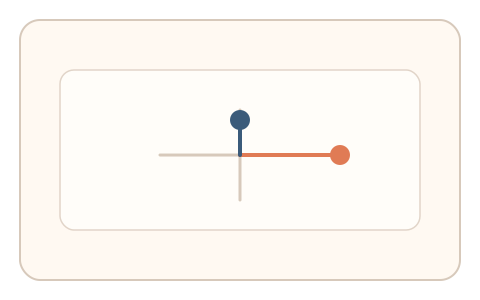
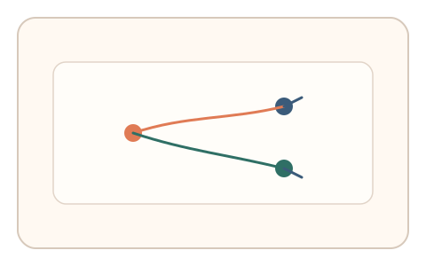
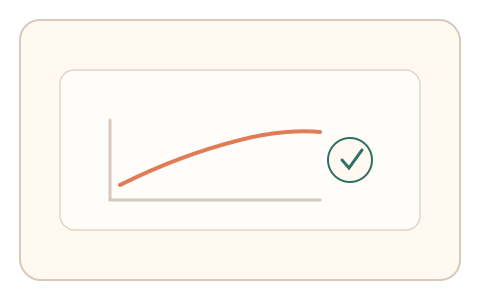

#99
Morphological Analysis - Combination Batches
已扩展
非均匀增益校准
水平/垂直增益不同的短拖任务要求两次校准，以适应曲线与轨迹动力学验证真实性。
概念原文
水平/垂直增益不同的短拖任务要求用户完成两次校准，系统分析适应曲线并与群体基线比对。任务结构为多阶段，信号形态为适应曲线与轨迹动力学。
把“适应过程”作为判定核心而非结果。
研究背景
当轴向增益不一致时，人类需要进行感知‑动作适应，校准过程中会出现稳定的误差收敛曲线。脚本难以复现自然的适应过程。
核心机制
- 设置水平/垂直不同增益的拖拽任务。
- 用户完成两次校准并修正偏差。
- 记录误差收敛与轨迹变化。
- 与群体基线分布比对判定。
用户流程
- 步骤 1：用户完成第一次增益校准。
- 步骤 2：系统提示第二次校准以修正。
- 步骤 3：系统分析适应曲线并判定。
判定信号
误差收敛曲线
人类适应过程具有稳定的渐进变化。
轴向纠偏比例
水平/垂直纠偏存在可测的比例关系。
判定逻辑
适应曲线与纠偏比例需落在人类区间；过度一致或无适应判异常。
对抗面
- 脚本直接修正增益并一次到位
- 重放真实用户的校准轨迹
防御与缓解
- 随机化增益比例与目标位置
- 引入轻微扰动降低模板化
- 叠加停顿与速度信号进行多信号判定
可达性与风险
提供更慢增益变化与更大目标，允许键盘替代操作。
- 设备差异导致增益感知不同
- 触控设备校准成本较高
可视化状态

状态 1：增益偏差
水平/垂直增益不同。

状态 2：两次校准
误差逐步收敛。

状态 3：曲线判定
比较适应曲线与比例关系。
参考资料
Motor adaptation
说明运动适应与误差收敛。
Visuomotor adaptation
说明视觉‑动作增益调整的机制。